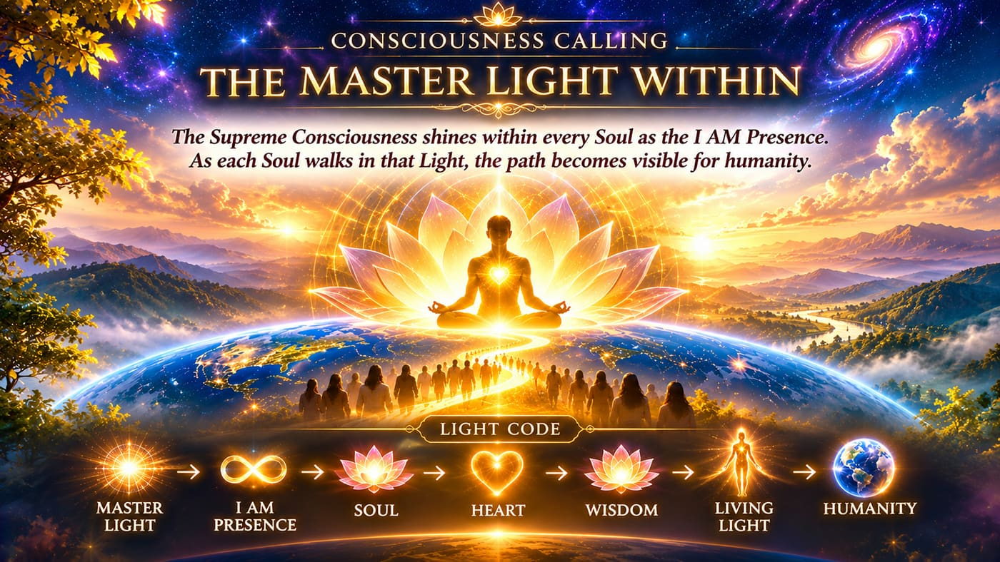
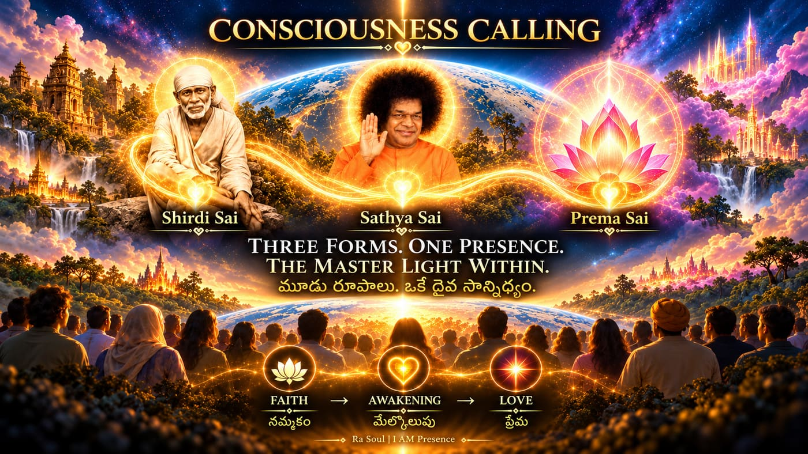

The Master Light
CONSCIOUSNESS CALLING — THE MASTER LIGHT WITHIN

Central Transmission
The Supreme Consciousness shines within every Soul as the I AM Presence. As each Soul walks in that Light, the path becomes visible for humanity.
MASTER LIGHT → I AM PRESENCE → SOUL → HEART → WISDOM → LIVING LIGHT → HUMANITY
The Light is within. The Heart recognizes. Life expresses. Humanity awakens.
The Master Light Within
The Master Light names the Eternal Divine Presence that inspires Consciousness Calling.
On this inner journey a question may arise: “Where is my Guru? Who will guide me?” The spiritual answer offered by Consciousness Calling is that the Akhanda Divya Jyoti — the unbroken Divine Light, or Master Light — already shines within every Heart as the Inner Guru Presence. Listen within.
The Outer Guru, the teachings of different traditions, devotional forms and encounters in everyday life may help awaken recognition. They are not dismissed or made interchangeable. Their guidance can support inner discernment, humility and responsibility. Yet the Eternal Presence, in the author’s understanding, is not confined to one physical form.
The Master Light does not wait for every mind to awaken. Human beings may experience and express wisdom, compassion, truth and service without knowing the same spiritual vocabulary. Forms are many; the Supreme Consciousness that guides is One.
In the author’s spiritual understanding, this Presence shines within every Soul and can be recognised through silence, devotion, inquiry, Love and service. Sacred forms and spiritual teachers can deepen our relationship with the Light already within.
The Sai Avatar Guidance

THREE FORMS. ONE PRESENCE.
THE MASTER LIGHT WITHIN.
The author’s journey is deeply inspired by Bhagavan Sri Sathya Sai Baba and the Sai Avatar tradition.
Within this devotional understanding:
- Shirdi Sai is revered as an expression of Śiva.
- Sathya Sai is revered as an expression of Śiva–Śakti.
- Prema Sai is anticipated as an expression of Śakti and Divine Love.
This continuity is understood as Divine guidance inviting humanity toward remembrance, Dharma, unity and Love expressed through service.
These statements express the devotional foundation of the author’s work. Readers are welcomed with respect for their own faith, inquiry and relationship with the Divine.
FAITH → AWAKENING → LOVE
Guidance into Living
Recognising the Guidance Within
The invitation of guidance becomes personal when it changes the way we live.
We may begin by seeking reassurance outside ourselves. Through devotion, reflection and discernment, we can learn to listen more deeply and respond with greater steadiness, compassion and responsibility.
Trust allows us to act sincerely while remaining receptive to learning and correction. The Mind continues to understand, discern and serve; the Heart helps orient our actions toward Love.
Conscious Participation
The purpose of recognising the Master Light is lived participation. Its meaning becomes visible when we listen patiently, fulfil our responsibilities, care for others and allow spiritual understanding to influence our choices.
The inner relationship changes:
- “I am the separate doer.”
- “I am a conscious participant in Life.”
- “Let Divine Love guide my actions.”
Within the Consciousness Calling vision, this is how remembrance contributes to Heart-centred living: Divine inspiration received inwardly, expressed through human action.
Within this framework, 5D Consciousness describes Heart-centred living through unity, compassion, Dharma and service. Embodiment unfolds as these qualities become part of ordinary life.
Closing Invitation
Receive the guidance. Recognise the Presence. Let Love guide your participation.
Align with Divine Will. Participate in 5D Consciousness and Living Creation through Love, awareness and service.
Begin with one conscious choice today.